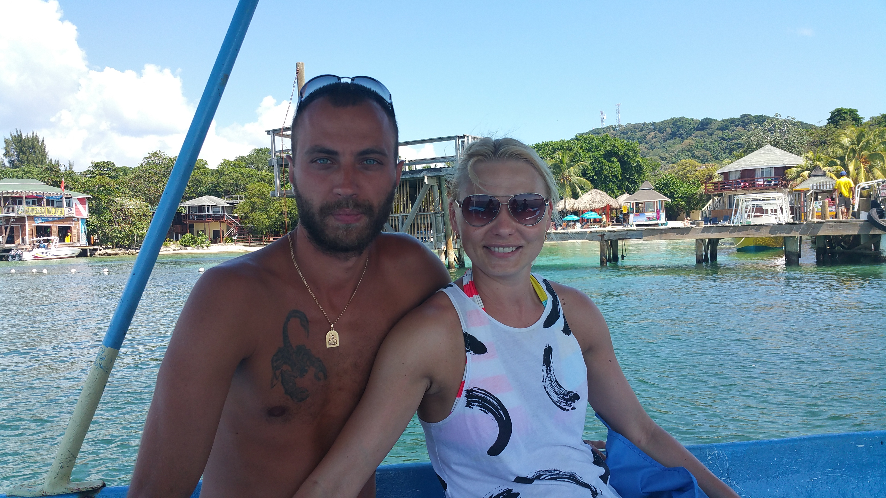
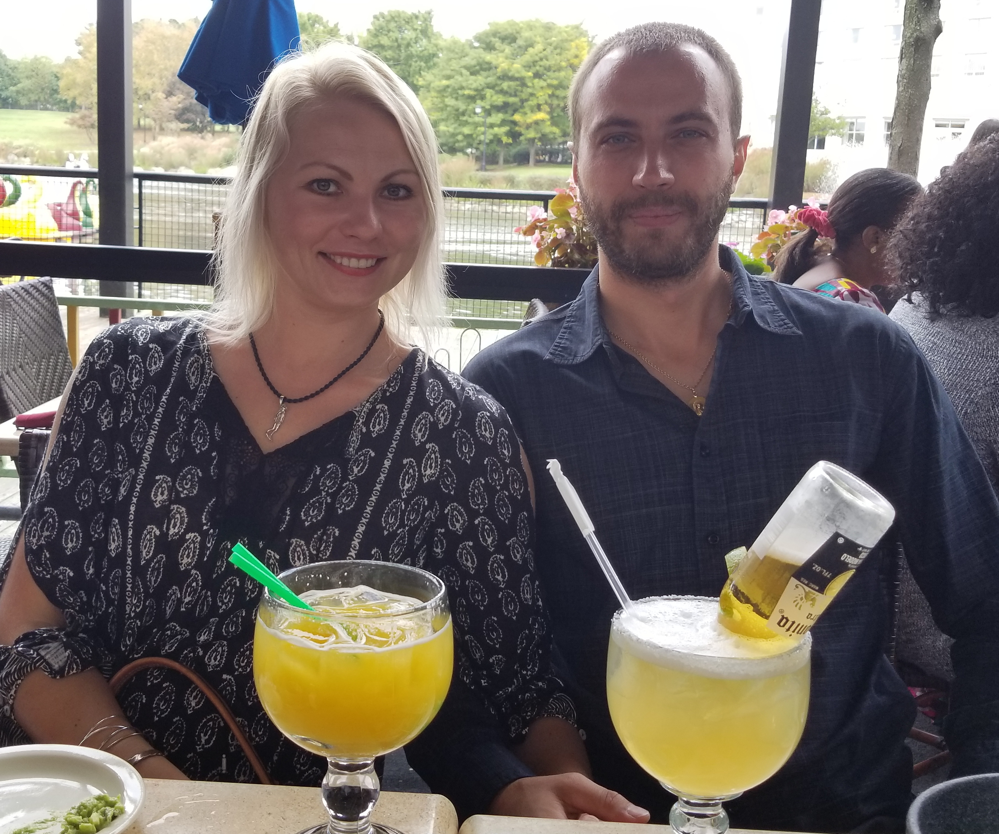
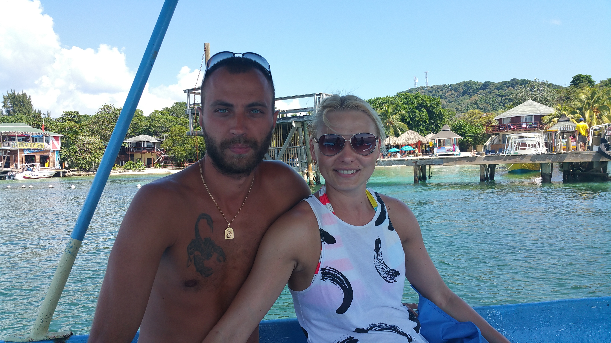
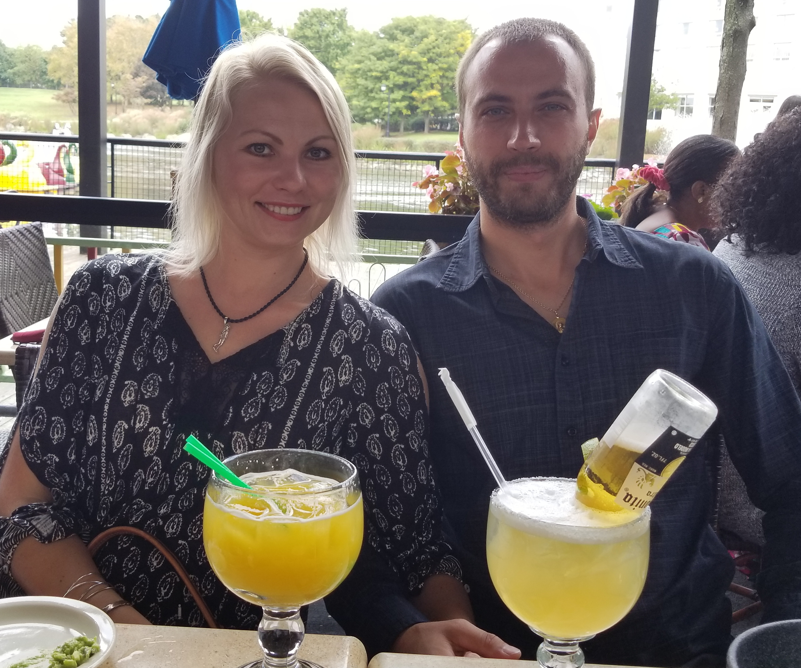

I’m Olga Anderjaska, a Maryland - based web designer and developer by profession and lover of travels, world cultures, languages, souls, food, oceans, wild spaces and urban places by nature. My husband, Igor and I started traveling in 2009. We travel about three to four times per year. Sometimes I think back about my life before and I couldn't understand why we didn't start our traveling journey earlier. It's like we didn't live before. Once we started to travel, everything felt more intense. Every time was a new adventure. We paid attention to details. We got addicted to traveling. Addicted to this kind of lifestyle. I never wanted to go back to a daily routine. Sitting in an office and doing some job from 9 to 5 seemed like the most ridiculous thing on earth. What a waste of lifetime!
One time, we decided to take a cruise around the Caribbean islands. We visited a lot of beautiful places but we truly fall in love with one of islads - Roatán, Honduras. Roatán lies on the southern edge of the Mesoamerican Barrier Reef System, the 2nd largest barrier reef in the world. All reef systems throughout the Bay Islands are protected by the local and central government with help from charitable donations and those on the front line.
This Mesoamerican Barrier Reef System brings a lot of scuba divers on island all year around. That's how we got into scuba diving a few months later after descovering Roatán. I never was a good swimmer but after my husband's lecture about, how cool would be doing scuba diving together, he convinced me to get a scuba diving license. After two weeks of constant studing, taking tests and diving classes we finally got our license, and were ready to dive deep into the ocean.
Roatán will always be a part of our lives. I have a gypsy spirit and I can’t ever try to deny or hide that. I still have to work as a web developer/designer which I love to do but no matter what, travel will always be a part of our lives, whether we just escape on weekends or during holidays. We are still undecided on where we would like to settle later, maybe in Roatán. At the moment it's in Rockville, Maryland in the States. But we blow with the wind so this can change at any time.
 


